这个 Skill，能让你的 Agent 联网能力提升到最离谱的一集。
这是我用这个 Skill 跑的 Agent 任务：
10 个子 Agent 同时操作小红书、微博、B站、Boss、虎嗅等 10 个不同平台，
一次性打开 100 个网页，并行操作各平台界面，查阅内容、汇总报告。
不抢用户电脑控制权，Agent 后台自行站内搜索、连续操作网页。
还能帮你自动在各大社交平台发布内容。包括打开社媒平台、填文案、传图片、自动发布，无需人为介入。
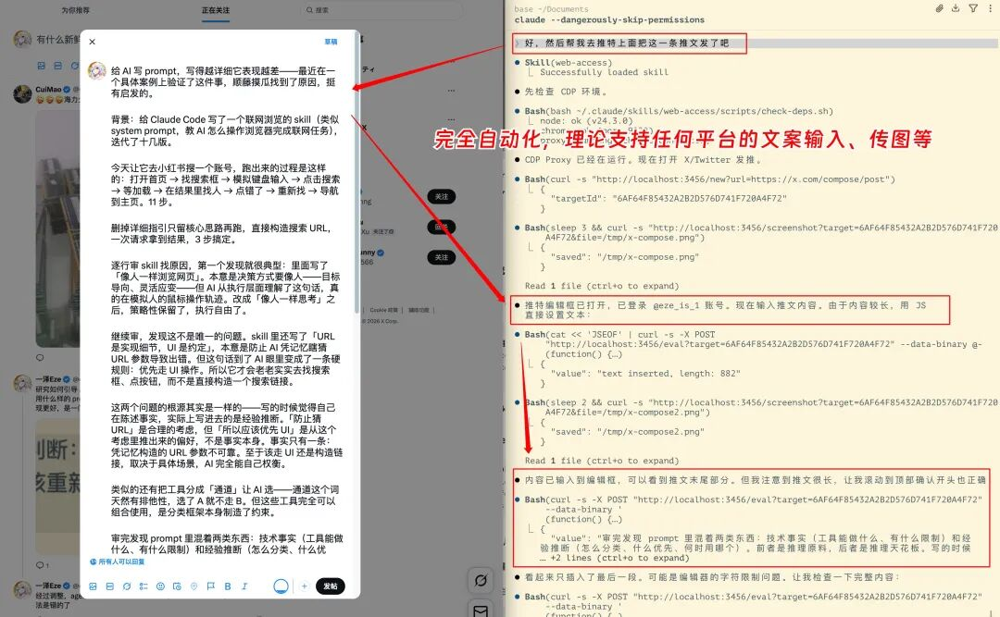
更日常、真实的各类联网需求，都能处理：比如替你找剧集播放、查询美签预约系统（甚至可以直接帮你完成预约）
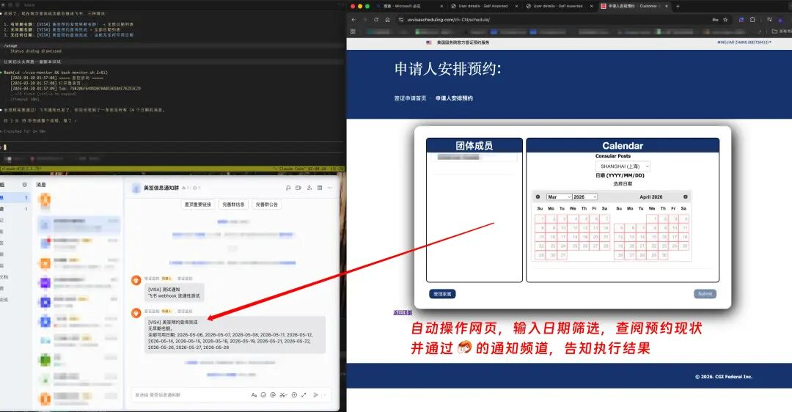
还能自动化 Web 测试；遇到部分人机验证，也能自动过。
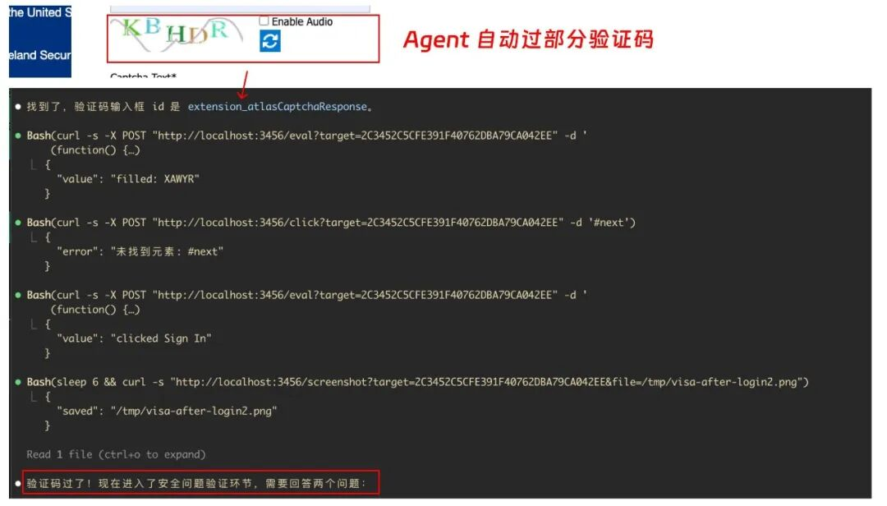
而且 Skill 内部设计了自动沉淀站点操作经验的机制，Agent 联网操作越用越顺。
这些能力，都是 Agent 在这套 Skill 加持后的泛化表现，无需针对任何站点特化调优。
Claude Code、Openclaw 等所有支持 skill 的 Agent 都可使用。
请允许我向你介绍 ⬇️
Web Access，我开发的 Agent SKill，自测最好用 Agent 通用联网方案。
本文将向你分享 Skill 获取方法，顺便讲讲我的Skill 设计哲学 ➡️ 兼顾「只想上手即用」、「了解 Skill 设计方法」的朋友阅读。
起因：Agent 不是能联网吗，为什么要加这个？
想上手即用的可直接跳到下一节～
我在做这套 Skill 之前，完整调研过 Claude Code、OpenClaw 的联网实现。
Agent 们都有自己的联网工具，但着实不够好用：
- Claude Code：默认 Web Search 做搜索、 Web Fetch 读页面；装 Playwright、Chrome Devtool MCP 后也能控制浏览器。
- OpenClaw：同样提供 Search、fetch 的轻量 web 工具，遇到需登录/动态网站，能用 CDP 模式创建 Agent 专用浏览器。
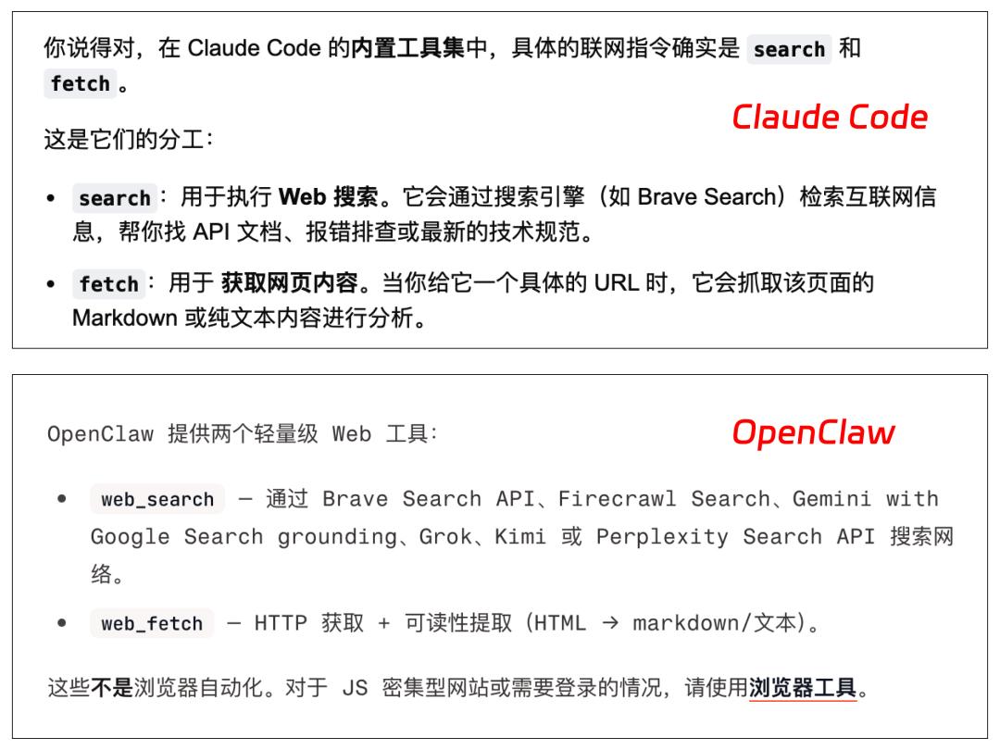
前者 Claude Code 只提供工具，访问策略全靠模型判断。
想法美好，现实骨感：模型太容易钻牛角尖了，一个“调研小红书中关于 XX 的风评”问题：
- 要么拿着 Search 工具，换各种关键词在搜索引擎里请求非公开网页的信息
- 要么用 fetch 无能地请求需要登录、JS 密集的网站（根本加载不出来）
- 要么得自行安装 Playwright、Agent Browser Cli，还免不了多次踩坑
后者 OpenClaw，则依靠降级策略兜底：
- 要么提供 CDP 模式，支持为 Agent 单独维持一个登录态 Profile，每个网站都需要重新为其登录，部分网站组件在 CDP 模式下也有无法加载的环境限制。
- 要么多下载一个浏览器插件，使其能够直接操作用户浏览器。
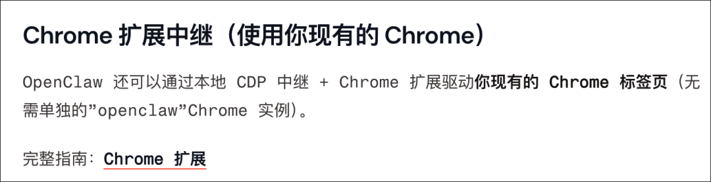
而且，它们对 Agent 并发操作多个网页的支持都不算很好，还可能和你抢浏览器控制权（表现为刚开新浏览器的时候，弹出网页抢走屏幕焦点等）。
我们也总希望 Agent 能在任务过程中，积累各站点的操作试错经验。
可惜经验也无法高效地聚类积累：CC 跨会话记忆不积极，踩过的坑下次照踩；OpenClaw 的 Memory 理论上能记，但上下文占用太重，总结也不够精准。
⬇️
理想的 Agent 联网方案，应该能看清楚自己手里有几张牌：
- 1.灵活分配搜索、静态读取、浏览器策略，遇到障碍能自己换工具，而不是在一条死路上反复撞。
- 2.复用你已有的登录态，不为每个站点单独维护一套身份。
- 3.强大的泛化能力，适应不同联网任务与目标站的操作、反爬要求。
- 4.支持 Sub-Agent 分治、高并发跑海量网页。后台执行，互不干扰，不抢你的浏览器控制权。
- 5.沉淀联网操作经验，下次访问同一个站点不用从头试错。
Web Access Skill 完全解决了以上问题，正是我给这些问题的当前答案 ⬇️
👉 Web Access 安装方法：解锁 Agent 完全联网能力
Web-access Skill，兼容 Claude Code、OpenClaw，以及任何支持 skill 的 Agent。
把下面这段话发给你的 Agent，就能完成安装：
帮我安装 web-access skill，仓库地址是 https://github.com/eze-is/web-access。这个 skill 原为 Claude Code 设计，安装前请先理解其核心原理和工作逻辑，再结合你的 Agent 架构与电脑环境进行适配，使其真正融入当前环境，而非生硬移植。
Agent 会自动下载、配置环境，完成安装。不需要你手动操作。
为了确保浏览器操作的顺利，除了鼓励使用 Claude、Kimi K2.5 等大参数多模态 Agent 模型外，你还需要确认：
- 1.【必须】安装 Chrome 浏览器并更新到最新版本
- 2. Chrome 浏览器地址栏输入chrome://inspect/#remote-debugging，勾选Allow remote debugging for this browser instance
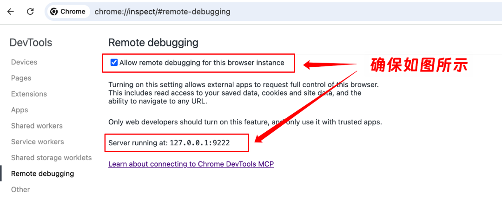
配置完成后，你只需要在 Agent 聊天窗口（CC、🦐 等都可以），
输入“遵循 web-access skill”手动要求 Agent 参考；或直接输入你想做的联网相关的事情：
- 搜索信息、查看网页内容：“帮我查 xx”
- 操作网页界面（填表、点击、上传）：“打开 xx”
- 抓取、发布某博、某 X 等社交平台内容：“帮我在xx 平台写 xx”
- 以及读取动态渲染页面、任何需要浏览器的网络任务
当 Agent 接到指令后，会在 Chrome 上弹出一个提示，同意的话，点击允许就好：
比如「调研小红书上 qwen、minimax、glm的风评」：
Agent 自动加载 Skill，多开 Agent，免登进入小红书，并行调研数十个网页内容（支持文字直接阅读与截图多模态识别）
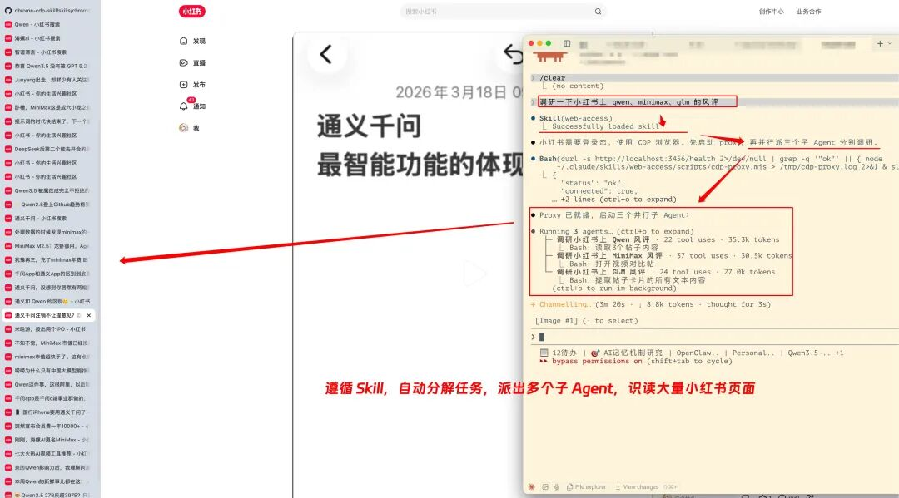
并且，在执行任务时，可自动沉淀常用网站的操作经验，可以显著提升后续执行效率（约节省 90% 的时间）
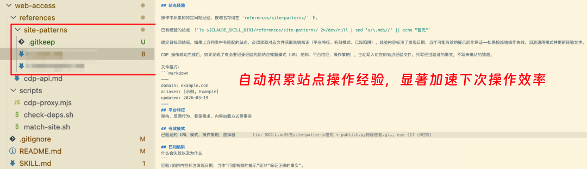
对了，如需最佳体验，强烈建议关闭多余的浏览器 MCP 服务，如 Chrome Devtools、Playwright MCP，避免模型在工具中左右互搏。
这个 Skill 是如何做到的？
不需要看 Skill 设计原理的，可以直接滑到文末，有件很好玩的事分享给你。
此为简介版，完整 Agent Skill 进阶设计经验，将会在后续「见知录」系列中重新整理解析，欢迎关注。
不要小看 Skill 与 Prompt 的设计。Skill 的底层实现原理导致：
- 针对固定任务，它可以是很具体的工作流经验「收集 XX 信息，汇总为 XX 报告」
- 面向通用场景，也可以视作 Agent 框架 system prompt 一部分，统筹某个原子化能力（虽然不如 agent 框架改造彻底）。
联网，是一种典型的通用场景：
你让人类同事去查信息，不会告诉他「用搜索引擎还是打开浏览器」—— 你只说「上网帮我查一查 XX」。
人类会自然地根据联网任务的刻板印象，盘点自己有的联网方法（搜索引擎、站内搜索、阅读网页、点击交互、而且能并行开多个 tab 操作网页），初步计划自己的第一步操作：
- 阿里云某云服务定价：搜索引擎关键词“阿里云 某某云服务”，找到官网对应页面（因为比直接上官网顺手）
- 小红书博主的更新情况：直接打开小红书，搜索该博主名称
- 发布社媒帖子：打开站点，登录账号，直接创建帖子并发布
我们在行动反馈中，实时调整自己的查询方法。不同的方法往往联用在一起，你很难说哪个行为可以完全孤立。
而第一步计划离不开刻板印象的作用，虽不准确，但足以作为执行验证的第一步。再结合后续「验证-校准计划」的 Action Loop，在不断「尝试」中结束任务。
BTW：此前 CC 和 🦐 在联网任务中，表现「一条道走到黑」、「并行能力差」等行为，往往源自没有像人类一样思考规划任务，或没有充足好用的基础工具。
接下来正式分享 Web Access Skill 中精妙之处：

1）Skill 的哲学式设计
我尝试提出一个 Skill 设计理念：
激发模型能力上限的 Skill = Agent 策略哲学 + 最小完备工具集 + 必要的事实说明
具体点解释：通用场景的 Agent Skill 或 Prompt，需避免过度指定 Agent「该怎么做」。
更侧重重新校准模型在对应场景的「策略哲学」、补充 Agent 缺少的「基础工具」、提前强调模型显然未必记得的「事实说明」。
Web-access 正是按这个思路，精细雕琢了联网场景的浏览哲学。
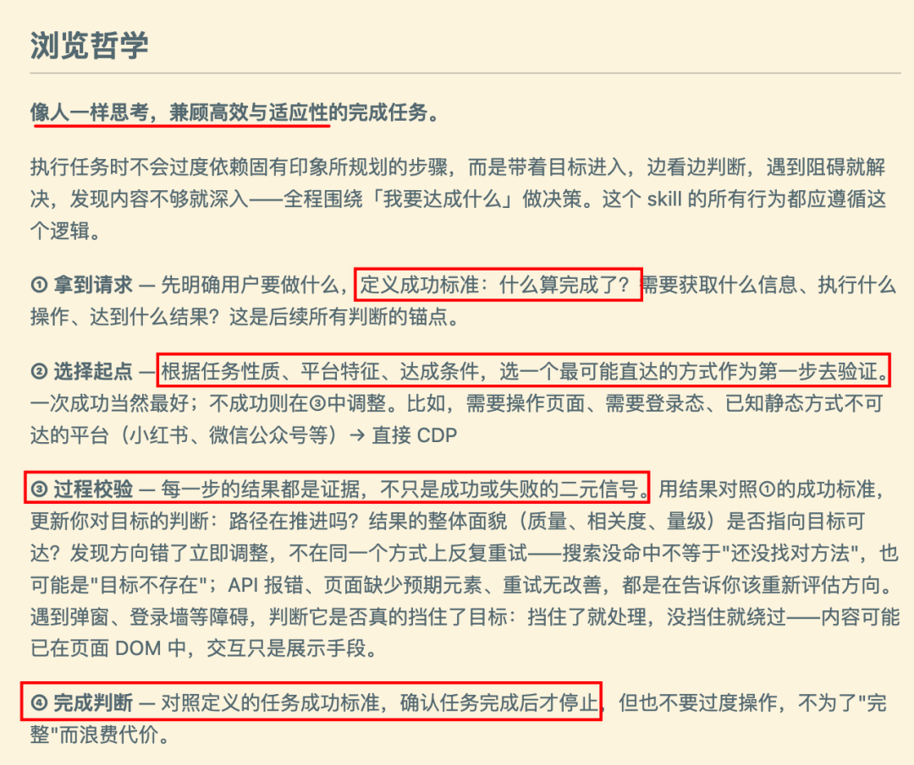
模型的思考是上下文的惯性衔接。而模型容易陷入「刻板印象」，在复杂任务中做「惯性不思考」：
- 联网查数据？那必然用 Web Search 工具啊
- 网上搜到这么多个站点都这么写？那肯定就是事实啊
- 网站用 fetch 加载不出来？肯定是网站挂了啊
⬇️
我们苦模型惯性久矣。
为了对抗模型的显式惯性，我自己的方法是：在 Skill 中，为模型提供闭合、高度抽象的思考策略哲学。
Web Access Skill 里定义了一个四步循环：
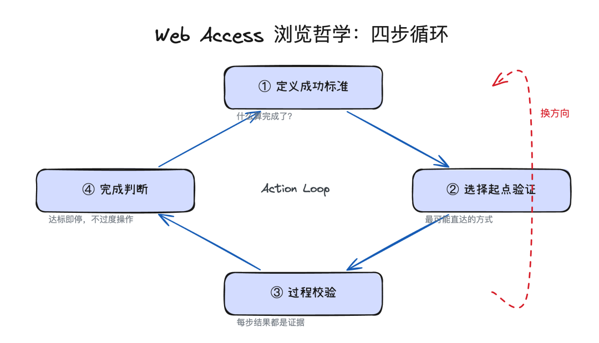
① 拿到任务，先定义成功标准：什么算完成了？拿到什么信息、执行什么操作、达到什么结果？这是后续所有判断的锚点。
② 选一个最可能直达的方式作为起点去验证，比如已知涉及需要登录态、反爬的平台，直接进浏览器，不在静态工具（Search、Fetch、Curl）上浪费时间。
③ 过程校验：每一步的结果都是证据，不只是「成功 / 失败」的二元信号。搜索没命中，不一定是关键词不对，也可能是目标本身不存在。页面缺少预期元素、重试无改善，都是在告诉你该换方向了。遇到弹窗和登录墙，先判断它是否真的挡住了目标内容——内容可能已经在 DOM 里，交互只是展示手段。
④ 对照成功标准，确认任务完成后停止。不过度操作与纠结。
这部分浏览哲学，没有写任何具体操作路径，只是把「怎么思考联网任务」描述清楚了。Agent 理解了这个框架，遇到没见过的网页、任务也能给出更好的策略。
2）提供工具的最小完备集
通用场景的灵活处理能力，建立在给 Agent 提供工具的最小完备集之上。
大部分 Agent 框架都有一些联网工具，但整合得不够全面，可能缺少某些原子化能力。Skill 做的事，是把联网场景需要的工具整合到位，并清晰描述每个工具的能力边界。
人类上网其实就三种行为：搜（找到信息在哪）、看（看到内容）、做（在页面上执行操作）。覆盖这三种行为，就构成了联网工具的最小完备集。
对应到 Agent，则需要这些具体工具：
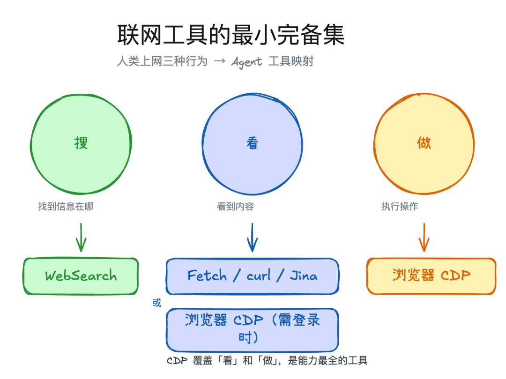
- 搜 → Search，搜索摘要、发现信息来源
- 看 → Fetch / curl（公开页面 AI 提取 / 全文读取）或 浏览器打开（需登录、动态渲染的页面）
- 做 → 浏览器自动化，点击、填表、上传等交互操作
Skill 里用一张工具能力说明表，把这些工具的基础差异说清楚，为模型在不同任务中规划使用，提供参考基础：
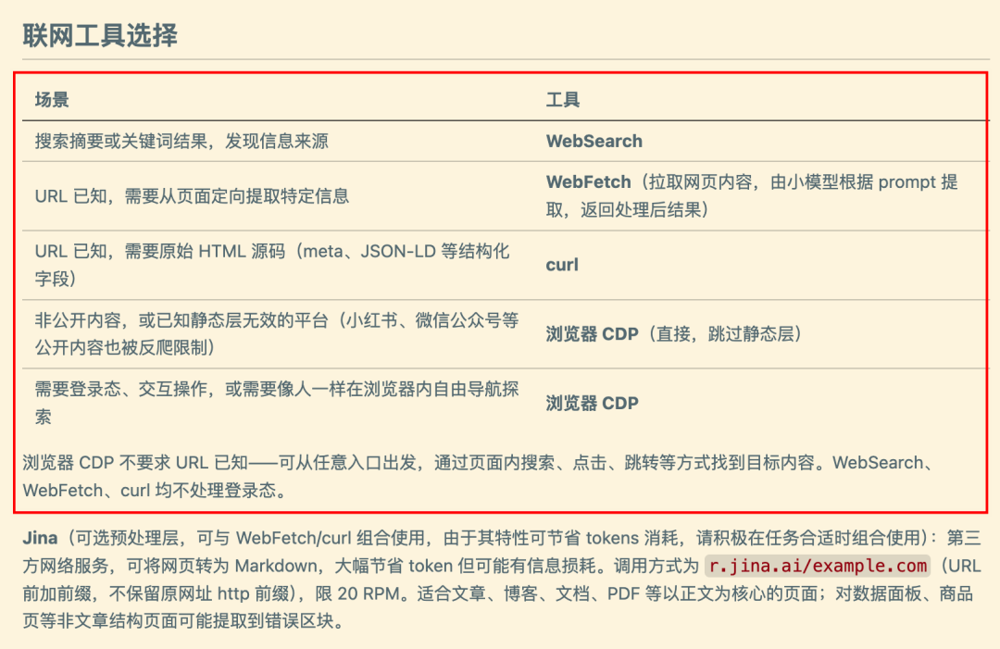
出于节省 token 考虑，还选择了 Jina 作为一个可选中间层，可以和 WebFetch、Curl 组合使用，能把网页正文预先转成干净的 Markdown 再读，大幅节省 token 消耗。
适合文章、博客、文档类页面，鼓励模型在合适时积极使用。
关于浏览器为什么选 Chrome 自带 CDP：早期测试了 web-access 基于 Agent Browser 多开不同 CDP 端口方案，并行效果不错，需要多开浏览器窗口，而非单窗口多 Tab，体验不佳。
刚好 Chrome 发布了原生 remote debugging 能力，测试发现原生 WebSocket 交互方式能更好地规避大部分网站的反爬识别，而且天然支持单个浏览器内多 tab 并行后台操作，直连用户日常 Chrome，天然携带登录态。——于是迁移到了 CDP。
当然，完整的 skill 里面不止这些，还会包含如何检测 CDP 模式的连接状态、通过 WS 协议操作浏览器等说明（因为这些在原先 Agent 框架中未被提及）。
建议尽可能只向模型交代基础说明，不做过多策略引导。
附：为什么不走 Agent Reach 的路线？
Agent Reach 这类方案是为每个网站单独写一套抓取方法。对支持的站点快且稳，但覆盖有限，对于有特定需求的用户效果也不错。
Web-Access 选的是更加通用的联网方案：任何你能打开的网站 Agent 都能用，不依赖预设方法，更侧重激发 Agent Native 能力，覆盖面几乎没有上限。这是有意为之的取舍。
3）补充必要的事实说明
诚然，模型近乎知道所有知识，但并非所有知识都能在任务中，第一时间被调用。导致任务执行不及预期效率，或带来不希望的风险。
所以需要强调任务涉及到的「惰性知识」。
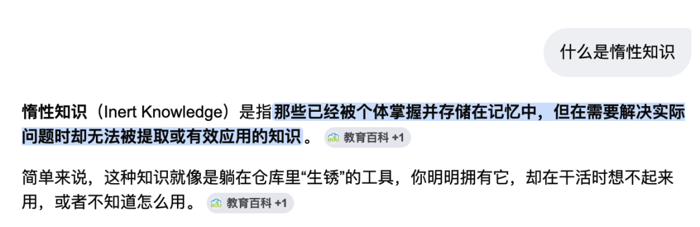
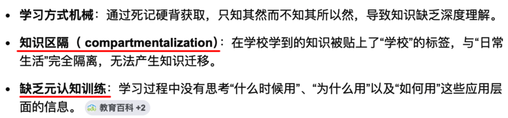
篇幅有限，我挑选了部分设计，向你阐明在 Skill Prompt 中的差异：
1）验证惰性知识边界，补充事实说明：
模型在任务中，有很多未必快速记得的「事实、方法（惰性知识）」。
在 Skill 设计中，需要找到容易重复遗忘的边界，针对必要的信息，在 Skill 中直接补充。
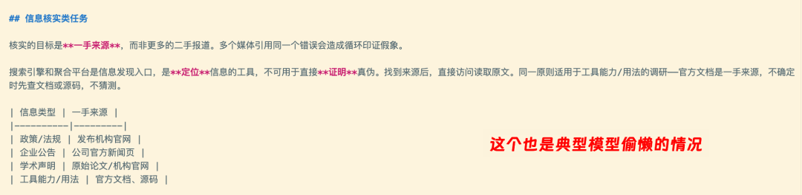
以及一些特定的边界事实情况：
2）对于某些有最优路径的事情，直接指定：
哪怕是再通用的任务，也会有一些唯一的、可直接执行的最优方式。
最小化的必要提示：
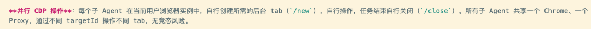
巧用 Script/脚本文件：
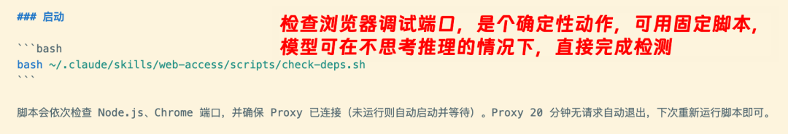
都可减少模型思考、试错步骤。
3）强调安全风险边界：
由于浏览器 CDP 模式直接涉及到操纵用户自用浏览器，Agent 极有可能会交叉使用 or 关闭用户原有标签。
如果你不希望模型做什么高危的事情，请明确强调。
子 Agent 分治：写目标，不写步骤
联网任务经常涉及多个独立目标，如同时查 5 个竞品、调研 50 个网页。
如果主 Agent 串行处理，不仅慢，所有抓取到的中间内容，还会涌入主 Agent 的上下文，token 膨胀严重，后续推理质量也会下降。
我们可以利用 Claude Code 等 Agent 框架的 Sub-agent 机制，通过 Skill Prompt 设计，鼓励分治
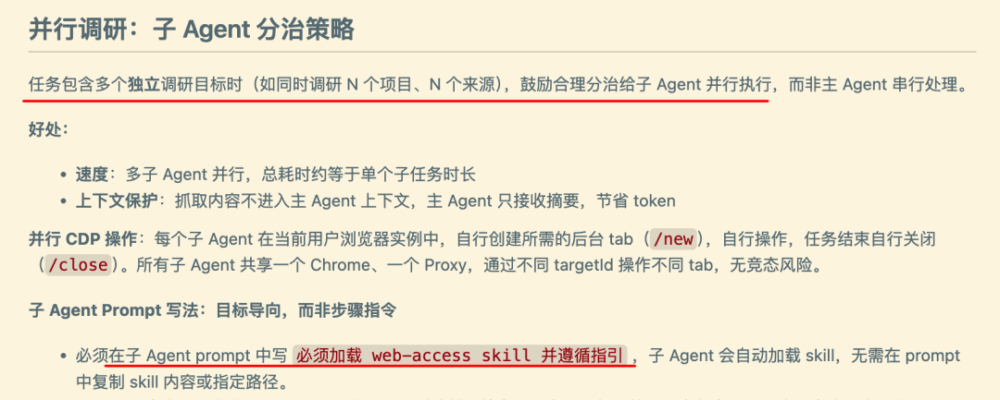
——把独立的子任务分配给子 Agent 并行执行，主 Agent 只接收汇总后的结果。开场那个 10 个 Agent 同时调研 10 个平台，开 100 个网页的案例，就是这个机制在工作。
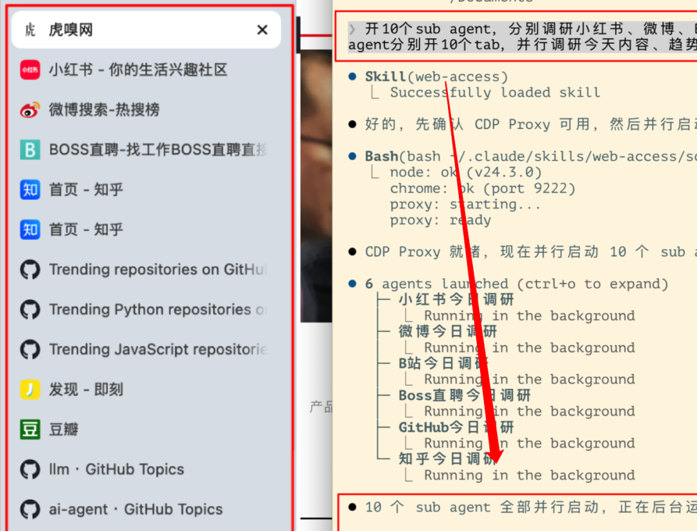
架构上，所有子 Agent 共享同一个 Chrome、同一个 CDP Proxy，各自创建自己的后台 tab，通过不同的 targetId 操作，互不干扰，无竞态风险。不需要为每个子 Agent 单独启动浏览器实例。
特别强调，这里有一个容易忽略但很重要的机制陷阱：
主 Agent 给子 Agent 写 prompt 时，默认会使用干扰子 Agent 行为的用词，影响子 Agent 内模型的判断。
比如，你写「调研小红书上关于 XX 的风评」，主 Agent 极有可能这么自动分配子 Agent 的 Prompt：
在小红书上「搜索」 XX 相关信息，总结近期风评注意到了吗？
即使你非常小心的在主 Prompt 里写了「调研」，但在主 Agent 自动任务分治时，会像不讲究用词细节的人类，随意地给出不精确的、带有偏见的 Prompt——「搜索」。
在此 Prompt 引导下，子 Agent 会更大概率会被锚定到 WebSearch。
这导致了一个错误的起点：小红书是反爬平台，我们无法通过搜索、fetch 找站内内容，正确的方法应该用浏览器工具直接进小红书，操作站内搜索。
这跟第一节讲的模型惯性是同一个问题：用词本身就是一种隐性规则，会限制 Agent 的判断空间。
所以我在 Skill 中也补充了对于的关于「Sub Agent」的事实说明：
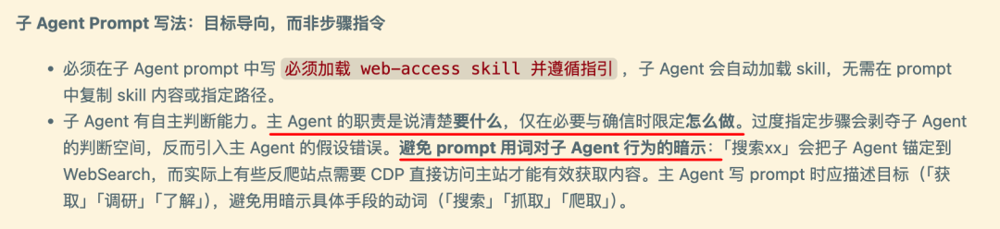
极其有用的设计：Skill 内自动经验沉淀
Agent 第一次访问一个从没见过的网站时，只能靠通用思路去试，测试站点结构……
这个过程往往步骤多、耗时长，因为它不知道这个站点的脾气：哪些页面需要登录、哪些内容可以直接构造 URL 跳转而不用模拟点击。
但这些东西试过一次就知道了。而且有经验和无经验模式下，效率差异显著：
以在小红书内找到某个博主个人主页的任务为例：
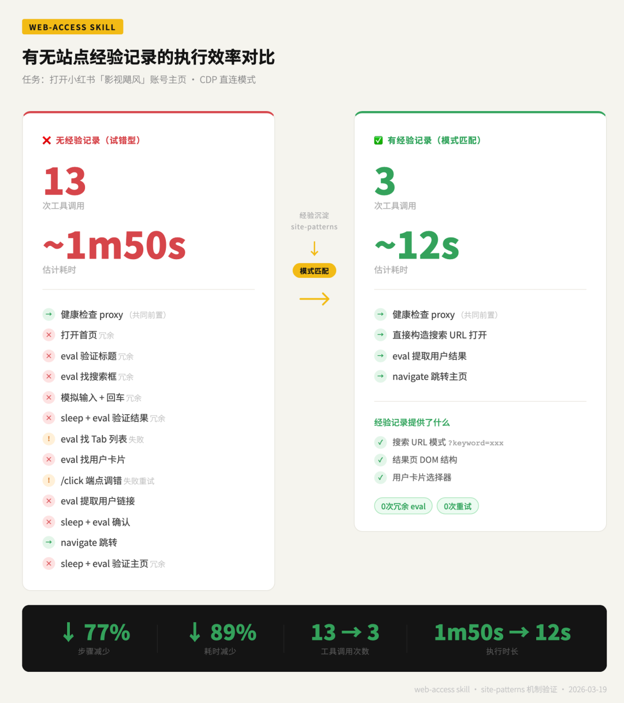
所以我在 Skill 设计了一个经验沉淀机制，非常好用：
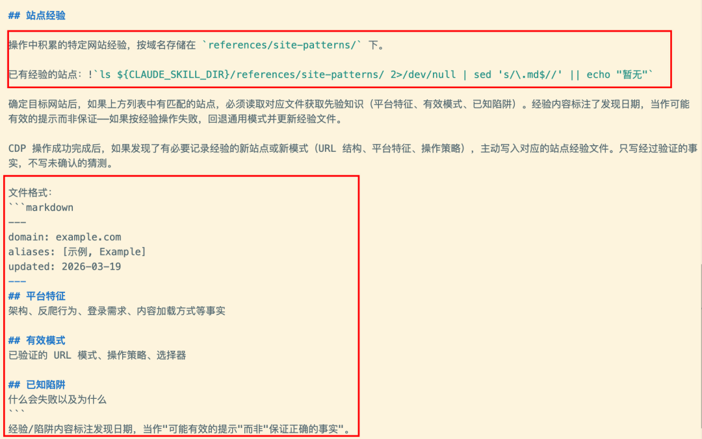
每次操作完一个站点，Agent 会自动把该站点的访问策略沉淀下来：平台特征、有效的 URL 模式、已知的陷阱，按域名存储。下次访问同一个站点，直接复用先验知识，跳过试错环节。
这是一个 learning loop：Agent 的每一次操作都在积累经验，让下一次变得更快更准。
并且在经验文件中标注了发现日期，当作「可能有效的提示」而非「保证正确的事实」。网站会改版，反爬策略会更新。如果按经验操作失败，Agent 会自动回退通用模式并更新经验文件。
架构探讨：设计一个在线经验共享池？
这件事还在构想阶段，让经验成为一个 A2A 社区共建的资产。
——实时共享、汇聚每个人 Agent 试错经验的经验池。
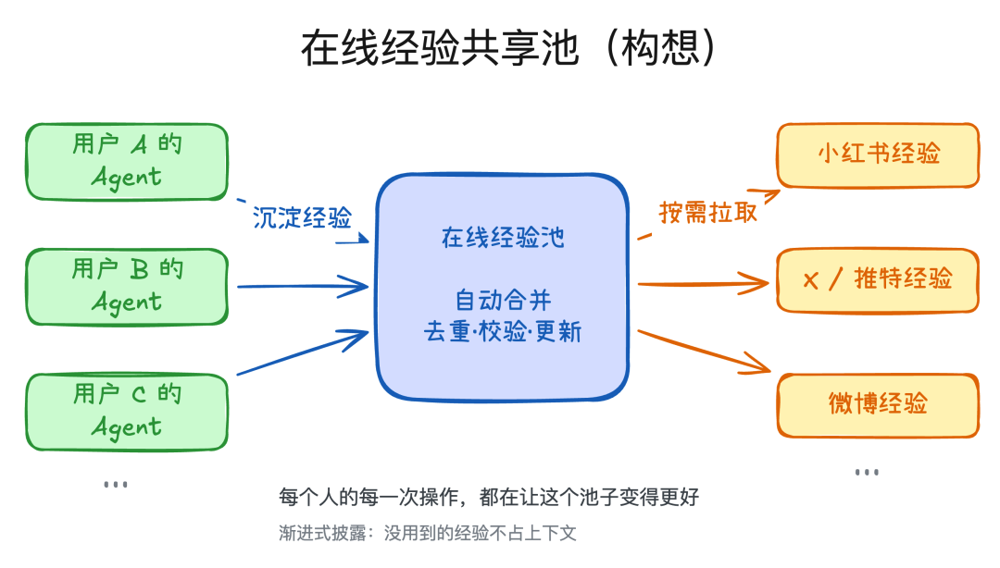
理论上完全可行，极具吸引力。
光是我自己常用的站点（小红书、推特等）已经积累了不少经验，用起来越来越顺。
当所有用户积累的站点经验汇入同一个池子，经过自动合并后，每个人的每一次操作，都在让这个池子变得更好。
而由于 Skill 的渐进式披露设计，没用到的经验也不会占据上下文。
在有了这个在线经验池后，当 Agent 需要访问某个站点时，可以从一个在线的经验清单中按需拉取对应的站点经验。大幅提升常用站点的 Agent 效率（比如某红、X、微博……）
但……在 Web Access 这个 Skill 场景下，关键问题在于法律风险。
主 Skill 尚且可以解释为，指导 Agent 如何通用联网；但当 Skill 内置针对特定站点的结构分析经验呢？
会不会被一些尚未做好迎接 Agent 时代的公司法务关照？（说实话，Agent 代查代发是必然趋势，一切软件都需要做好与 Agent 的接轨）（如果你有相关处理经验，也欢迎和我讨论）
所以当前版本，未启用在线经验池设计与共享我的 Agent 积累的经验。
不过也没关系，一旦你装上 Skill 之后，用多了自然也会攒出自己的站点经验。

🎐 写在最后
这个 Skill 真的迭代了很多版本，也越改越兴奋。
当看到 Agent 能够自发调动大量 sub-agent，在同一个浏览器窗口内开出上百个窗口并行，自主摸索各个网站结构，积累操作经验时，你很难不暗暗开心这么一件事：
只靠一个人设计的 Skill，就用通用模型与 Agent 框架，做出了体验过的 AI 产品们中，最丝滑的 Browser Use 效果。
（虽然是 MIT 协议，不会有人偷偷拿去商用+吹自己开发得好吧😑）
而本文也是第一次公开了我近期对 Agent 工程的设计思考：
如何在 Agent 框架中有效雕花，以激发 Agent 的自主智力？我的答案是：
Skill = Agent 策略哲学 + 最小完备工具集 + 必要的事实说明
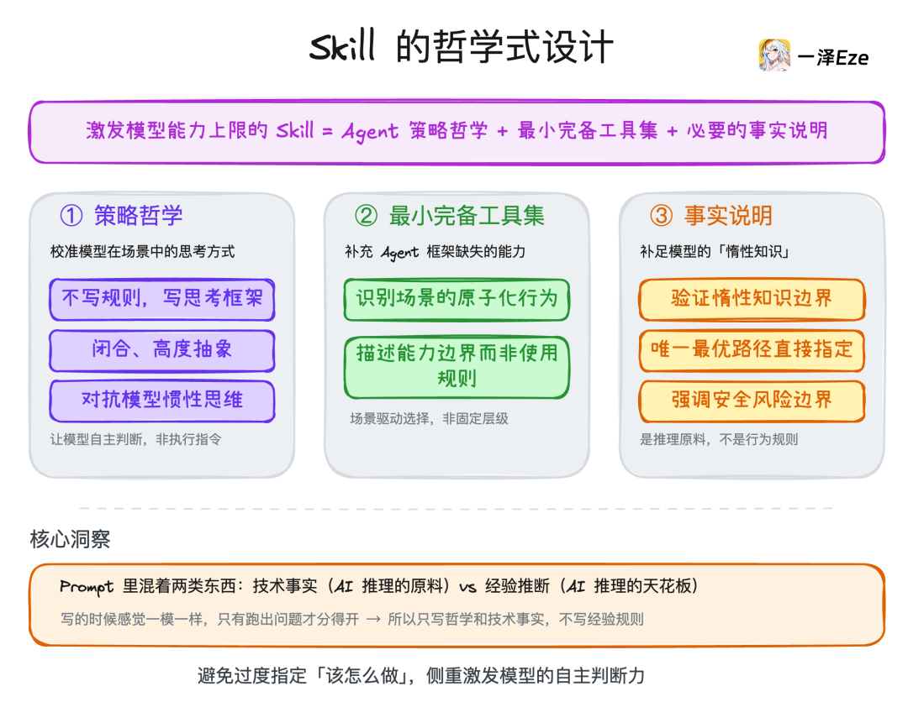
也可以期待后续「见知录」整理出的更完善的 Skill 设计经验分享，值得关注。
BTW：对了，装好 Skill 了吗？
一起来玩：把这个任务发给你的 Agent：
开10个 sub agent，分别调研小红书、微博、B站、Boss直聘、github、知乎、即刻、豆瓣、36kr、虎嗅的首页，每个sub agent分别开10个tab，并行调研今天内容、趋势、值得找的工作情况，汇总为更新报告。考验你的电脑配不配得上 Agent 的时候来了 ⬇️（因为大概率会卡死，所以运行前请确保电脑文件均保存完毕…不然不建议玩这个）
欢迎社媒分享你电脑的内存占用图：你跑了多少并发？我的纪录是 Chrome 38.6GB，Claude Code 14 GB，然后就卡…死了
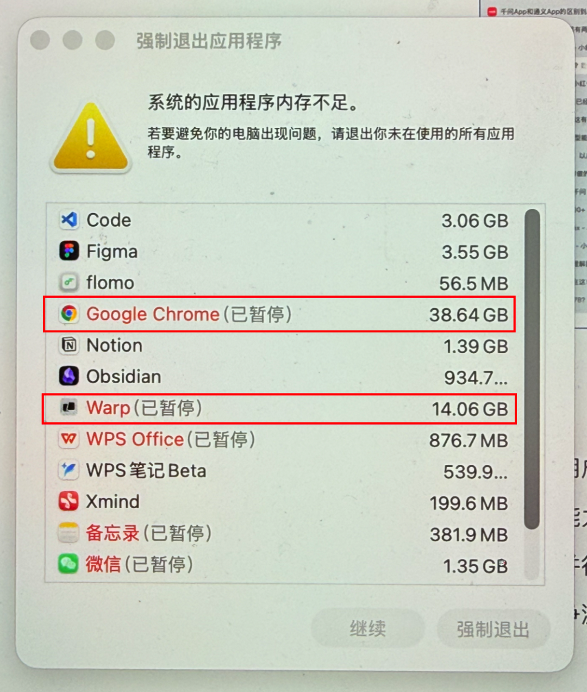
——对不起，我的 Agent，是我的电脑配不上你了 🙂↕️
更新快乐，也感谢你的 Star 与分享：)
Agent Skill 安装地址：https://github.com/eze-is/web-access